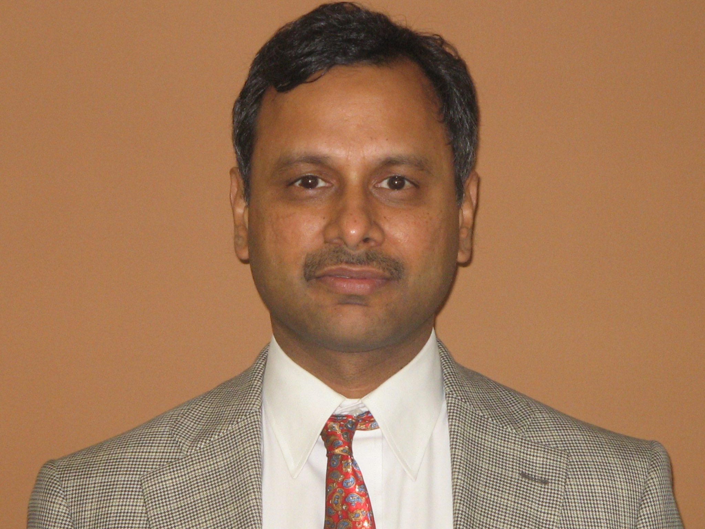
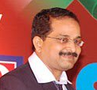

Extra Mural Lectures
Are you looking for a breather from lectures that are extremely course oriented or are purely based on technical knowledge? The talks at Elan 2k11 offer you the perfect opportunity to satiate your thirst for some extensive knowledge on topics which you would otherwise not come across in your curriculum.
The lectures will be delivered by noted personalities from various fields and thus an enriching and enthralling experience is assured for all the attendees.
SPeakers:-

Manish Gupta
Director, IBM Research - India
Chief Technologist, IBM India / South Asia

S. Vijay Kumar
Founder, VR1 Forever